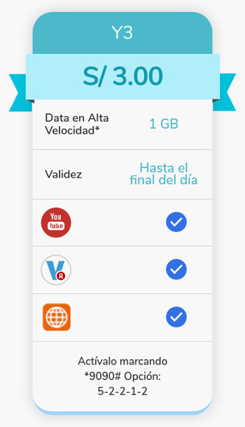
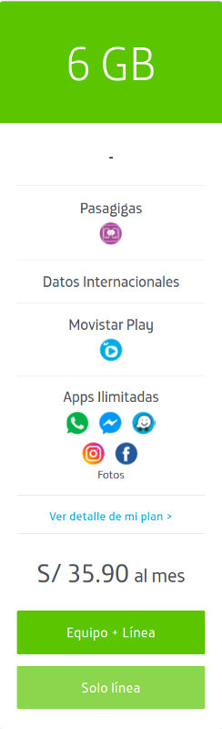
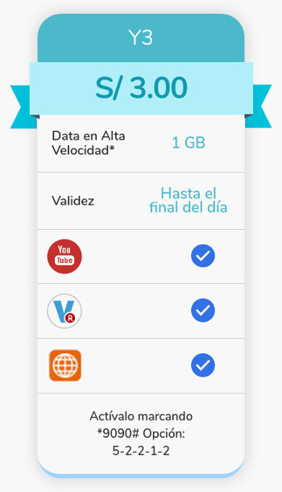
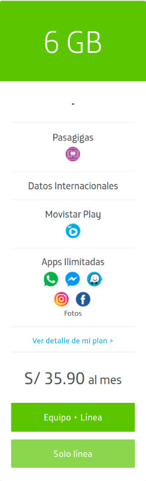

Neutralidad de la red
Hola, soy Jj
https://www.isgeek.net
Algunos escenarios
- Correo postal
- Viajes en avión
Neutralidad en la red
Control de P2P sharing.
Consumo de la capacidad de ancho de banda.
Cableado priorizado por servicios.
Potenciales cobros adicionales por consumo de servicios,
Los ISPs dijeron que no lo harían.
Pero el diablo es sabio...
Ahora una historia...
 



Caso de los programas de chat
| Costo de servicios? | Futuro? |
|---|---|
| Todos cuestan igual | Próspero |
| Algunos son gratis las alternativas cuestan? | Dominado por unos pocos |
Zero Rating
Facebook Free Basics
India
Un poquito de Internet vs Nada de Internet?
Neutralidad de la red
Efectos secundarios
- Confusión
- Control de consumo de datos
- Censura - Silos en Internet
Otras modalidades
- Uso de VPN
- Hardware no autorizado, Routers
- Bloqueo de servicios que compiten con el ISP
- Apple y AT&T Bloqueando Skype (2009)